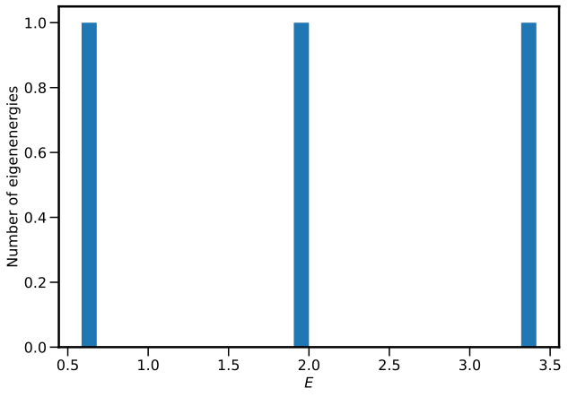
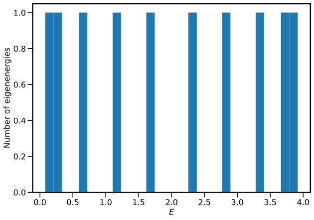
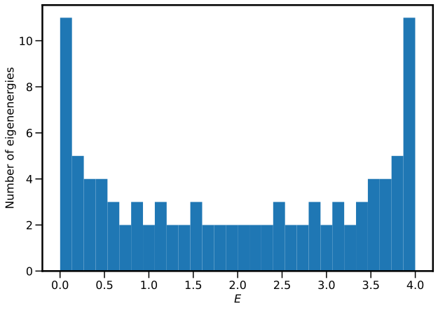
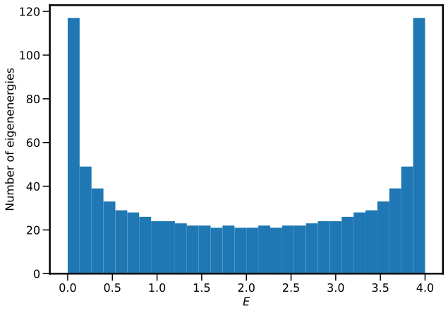
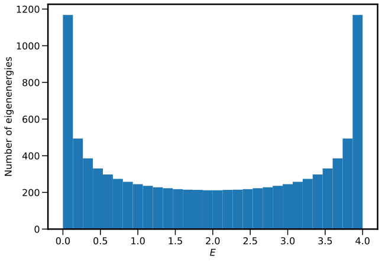
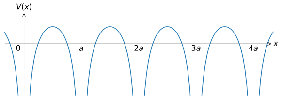
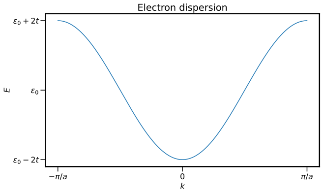
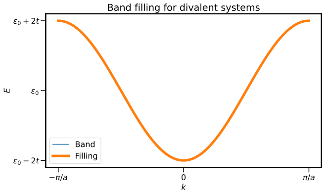
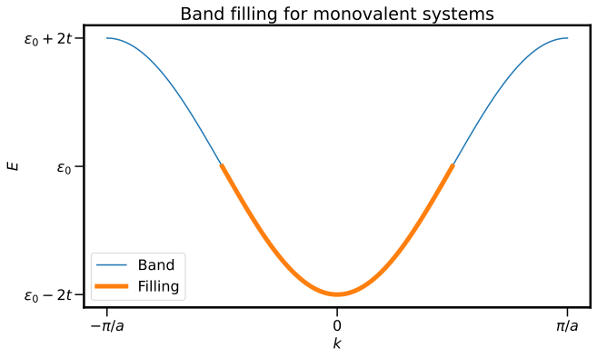
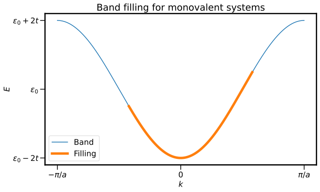

The tight binding model¶
One-dimensional chains have been doing well, so why stop?
Introduction¶
The model of Sommerfeld saw the Fermionic nature of electrons cemented in Drude's kinetic theory of electrons, but as we saw in our discussion of chemistry, electrons tend not to be free, but rather occupy states as governed by surrounding nuclei. It is from this point that we aim to marry our discussion of bonding theory in the LCAO framework with our recent progress on modelling solids in one dimension.
Expected competencies
It is assumed that you have familiarity with the following concepts/techniques:
- Solid-state physics: 1D model of a solid, LCAO
Text reference
The material covered here is discussed in section(s) of The Oxford Solid State Basics
Computational content
The Jupyter notebook associated with this section can be accessed by clicking the icon below:
Tight binding¶
In our discussion of covalent bonding, we were able to obtain a solution to the Schrödinger equation using the variational method in the framework known as LCAO. We are going to apply the same framework to an infinite chain of atoms, but before we do this, we are going to consider a gentle extension to the simple 2 atom case that we originally considered.
A triatomic molecule¶
Let us consider a one-dimensional triatomic system as illustrated below:

We are going to make the exact same assumptions that we made when we formulated LCAO, namely we are looking at a frozen molecule (no vibrations) with fixed nuclear positions (the Born-Oppenheimer approximation). We assume that the atoms are identical, and the electrons are tightly bound to a given nucleus so that we have
where is the usual kinetic energy operator, is the potential due to the nucleus and is the energy of the bound electronic state. We again make the crude approximate that our orbitals are orthogonal1, such that
Now, we can do exactly what we did for a diatomic molecule, namely, consider the trail wavefunction:
By performing the exact same logic and mathematics we arrive at the matrix equation
where with the energy shift due to the presence of all other nuclei. It is assumed that hopping occurs only between the nearest neighbours such that
3.3.1: Apply the exact same logic and mathematics to arrive at the above matrix equation
Obtaining solutions to such a problem can be unwieldy, but fortunately, we have the perfect tool for the job.
Number cruncher¶
We can use our computational toolkit to solve for the eigenvalues of a matrix. For example, with and , we find that the eigenvalues for the matrix above are approximately . But what use is this? Well, let's look at a simple case of varying .
3.3.2: Make a plot of the energy eigenvalues as a function of running from and interpret your result. Ensure to include your code.
Perhaps the most useful thing to do is similar to that which was introduced in the last section, which is using to produce a histogram sampling of the energy eigenvalues in order to visualise the density of states. If we go ahead an do this:

The density of states is not a particularly useful concept with few states, but fortunately, this system scales well and "grows diagonally" with an increased number of atoms: as the hopping is limited to nearest neighbours and states are orthogonal, only the diagonal and first-off diagonal elements will be non-zero. So let's go ahead and crank the handle!
To infinity and beyond




LOL: good luck! That would be one big matrix, much large than my meagre computer can handle.
3.3.3: How do these results compare with what we have seen previously?
An infinite chain¶
The above extension of the diatomic system to a triatomic system, especially when coupled with some computational assistance to hone our intuition, we are now going to consider the case of an infinite number of atoms, as depicted below:

The potential for the above system, assuming that the locations of atoms are with , is then:

Now we can redeploy the machinery that we used for the diatomic and triatomic systems, namely we formulate the molecular orbital via the LCAO model:
and write the effective Schrödinger as
where the matrix elements of the Hamiltonian are given by
It is a bit of work, but one can show that these matrix elements evaluate to
with the same definitions for and as in the triatomic case.
Solving the tight-binding chain¶
It will perhaps come as little surprise that the method that we are going to use to solve our effective Schrödinger equation is similar to the method we have use to solve for vibrations in a chain, namely to look for plane-wave solutions:
3.3.4: How does this form of solution compare to the assumed form of solutions for oscillations?
We then crank the handle:
which yields the energy eigenvalue
which is plotted below:

There are obvious similarities to the dispersion of oscillations, or phonons, but there are stark differences as compared to the Sommerfeld free electron model: now only a range of energies can be occupied, and this range is referred to as an energy band, and the energy difference between the top and the bottom of this band is called the bandwidth2.
Further considering the band structure as compared to the free electron model, let us focus on the dispersion relation close to the base of the band at , where we approximate the energy as
If we compare this to the free-electron dispersion relation
we see that the band structure is similar, but with the lowest available energy is instead of , and the electrons behave as if they had a different effective mass
For the moment, we leave this as an observation, but we shall return to it later in the course.
Filling bands¶
Let us now consider a system of atoms. Due to the spin degeneracy, at each value there are 2 possible states which can be occupied, which means for the system there are possible states. The implications of this are significant.
Band filling
Let us consider an atom with two valance electrons: there will be as many electrons as states and thus the every state in the band will be occupied, as illustrated below:

Now let us consider monovalent atoms: there will be twice as many states as there are electrons, and thus the band will only be half filled:

Note that there is now a Fermi surface - well, Fermi points.
A Fermi surface means that nearby electrons can occupy neighbouring states, for example, under the influence of an electric field:

3.3.5: What is the implication of the plots shown in the band filling content block?
Conclusions¶
- The density of states can be effectively visualised by sampling the dispersion relation and producing a histogram. Moreover, numerical tools are useful, especially when dealing with systems of many particles!
- Solving Schrödinger's equation in the tight-binding framework using LCOA is surprisingly similar to a one-dimensional harmonic chain
- The tight binding model gives rise to electron bands
- At the bottom of bands, electrons have a similar dispersion relation to free electrons, but with altered mass
Exercises¶
Preliminary provocations¶
- Compare the expression of the effective mass with Newton's second law. Do you observe any similarities?
- Check the units of the effective mass. Is it what you expect?
- Calculate the effective mass of the free-electron dispersion relation. Is this what was expected?
- Under what condition is the effective mass the same for each electron?
Exercise 1: The next-nearest neighbour chain¶
Let's expand our one-dimensional chain model by extending the range of interaction to include the next-nearest neighbours:
- Write down the new Schrödinger equation for this system.
- Solve the Schrödinger equation to find the dispersion relation .
- Calculate the effective mass .
- Sketch the effective mass as a function of for the cases , and .